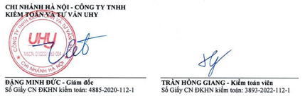

Kính gửi:
Các Cổ đông
Hội đồng Quản trị và Ban Tổng Giám đốc Tổng Công
ty
Đầu tư Phát triển Nhà và Đô thị Nam Hà Nội
Chúng tôi đã tiến hành kiểm toán Báo cáo tài chính của Tổng Công ty Đầu tư Phát triển Nhà và Đô thị Nam Hà Nội (sau đây gọi tắt là “Công ty”) được lập ngày 10/03/2023, từ trang 06 đến trang 39 bao gồm: Bảng cân đối kế toán tại ngày 31/12/2022, Báo cáo kết quả hoạt động kinh doanh, Báo cáo Lưu chuyển tiền tệ cho năm tài chính kết thúc cùng ngày và Bản thuyết minh Báo cáo tài chính.
Ban Tổng Giám đốc Công ty chịu trách nhiệm về việc lập, trình bày trung thực và hợp lý Báo cáo tài chính của Công ty theo Chuẩn mực kế toán, Chế độ kế toán doanh nghiệp Việt Nam và các Quy định pháp lý có liên quan đến việc lập và trình bày Báo cáo tài chính và chịu trách nhiệm về kiểm soát nội bộ mà Ban Tổng Giám đốc xác định là cần thiết để đảm bảo cho việc lập và trình bày Báo cáo tài chính không có sai sót trọng yếu do gian lận hoặc nhầm lẫn.
Trách nhiệm của chúng tôi là đưa ra ý kiến về Báo cáo tài chính dựa trên kết quả của cuộc kiểm toán. Chúng tôi đã tiến hành kiểm toán theo các Chuẩn mực kiểm toán Việt Nam. Các chuẩn mực này yêu cầu chúng tôi tuân thủ chuẩn mực và các quy định về đạo đức nghề nghiệp, lập kế hoạch và thực hiện cuộc kiểm toán để đạt được sự đảm bảo hợp lý về việc liệu Báo cáo tài chính của Công ty có còn sai sót trọng yếu hay không.
Công việc kiểm toán bao gồm thực hiện các thủ tục nhằm thu thập các bằng chứng kiểm toán về các số liệu và thuyết minh trên Báo cáo tài chính. Các thủ tục kiểm toán được lựa chọn dựa trên xét đoán của kiểm toán viên, bao gồm đánh giá rủi ro có sai sót trọng yếu trong Báo cáo tài chính do gian lận hoặc nhầm lẫn. Khi thực hiện đánh giá các rủi ro này, kiểm toán viên đã xem xét kiểm soát nội bộ của Công ty liên quan đến việc lập và trình bày Báo cáo tài chính trung thực, hợp lý nhằm thiết kế các thủ tục kiểm toán phù hợp với tình hình thực tế, tuy nhiên không nhằm mục đích đưa ra ý kiến về hiệu quả của kiểm soát nội bộ của Công ty. Công việc kiểm toán cũng bao gồm đánh giá tính thích hợp của các chính sách kế toán được áp dụng và tính hợp lý của các ước tính kế toán của Ban Tổng Giám đốc cũng như đánh giá việc trình bày tổng thể Báo cáo tài chính.
Chúng tôi tin tưởng rằng các bằng chứng kiểm toán mà chúng tôi đã thu thập được là đầy đủ và thích hợp làm cơ sở cho ý kiến kiểm toán của chúng tôi.
Theo ý kiến của chúng tôi, Báo cáo tài chính đã phản ánh trung thực và hợp lý, trên các khía cạnh trọng yếu tình hình tài chính của Tổng Công ty Đầu tư Phát triển Nhà và Đô thị Nam Hà Nội tại ngày 31/12/2022, cũng như kết quả hoạt động kinh doanh và tình hình lưu chuyển tiền tệ cho năm tài chính kết thúc cùng ngày, phù hợp với Chuẩn mực kế toán, Chế độ kế toán doanh nghiệp Việt Nam và các quy định pháp lý có liên quan đến việc lập và trình bày báo cáo tài chính.
Báo cáo tài chính của Tổng Công ty Đầu tư Phát triển Nhà và Đô thị Nam Hà Nội cho năm tài chính kết thúc ngày 31/12/2021 đã được kiểm toán bởi Công ty Kiểm toán khác và Công ty Kiểm toán này đã đưa ra ý kiến kiểm toán chấp nhận toàn phần đối với báo cáo tài chính này tại ngày 22/02/2022.
Hà Nam, ngày 15 tháng 03 năm 2023